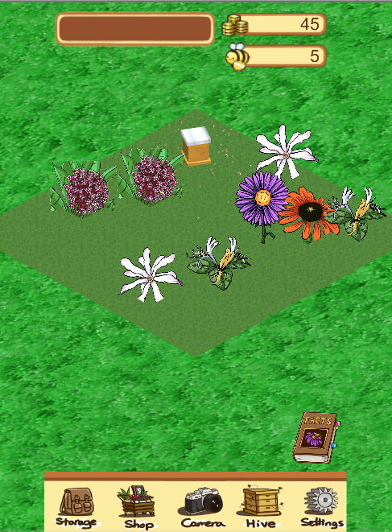
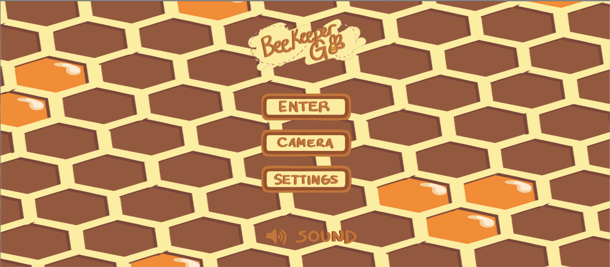
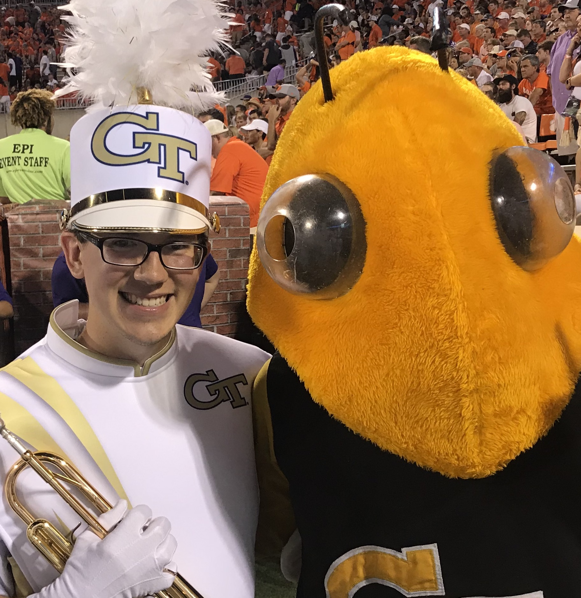
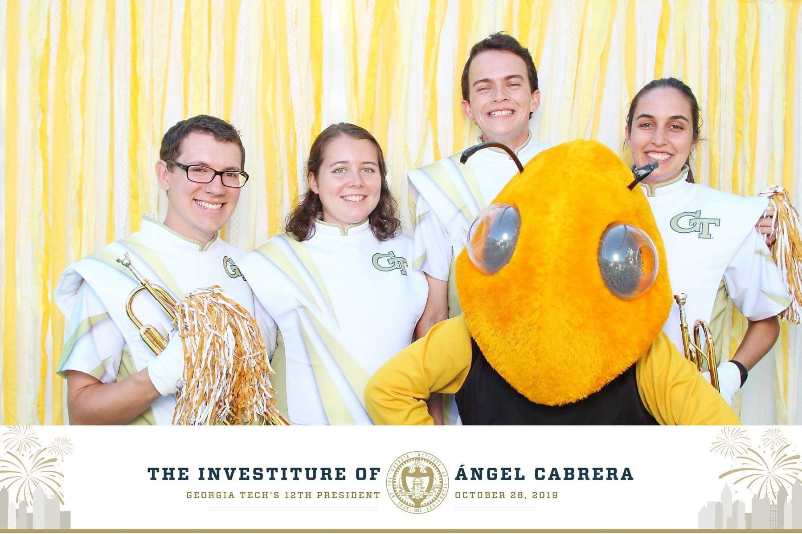
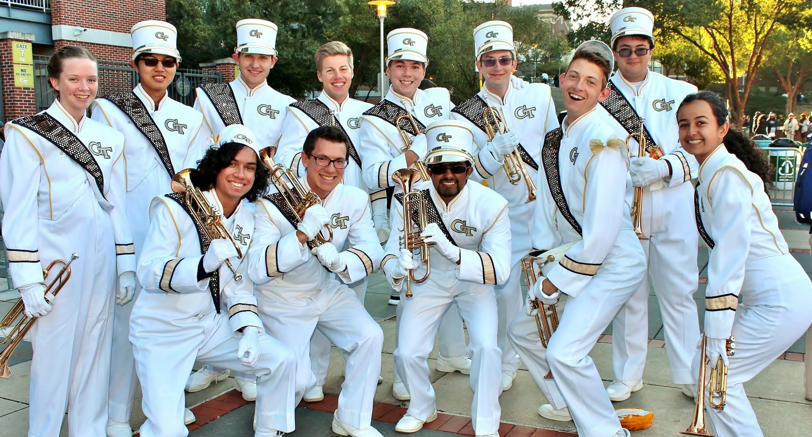
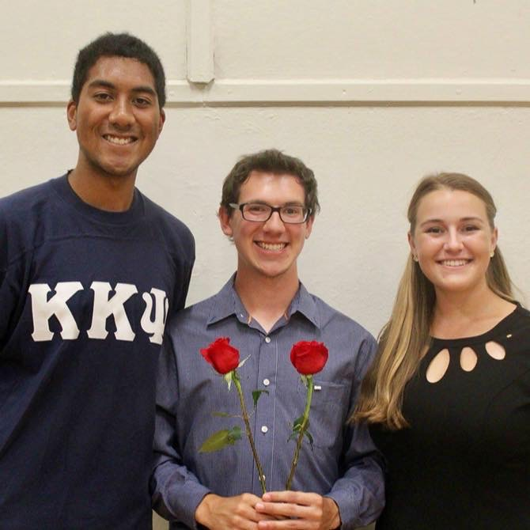
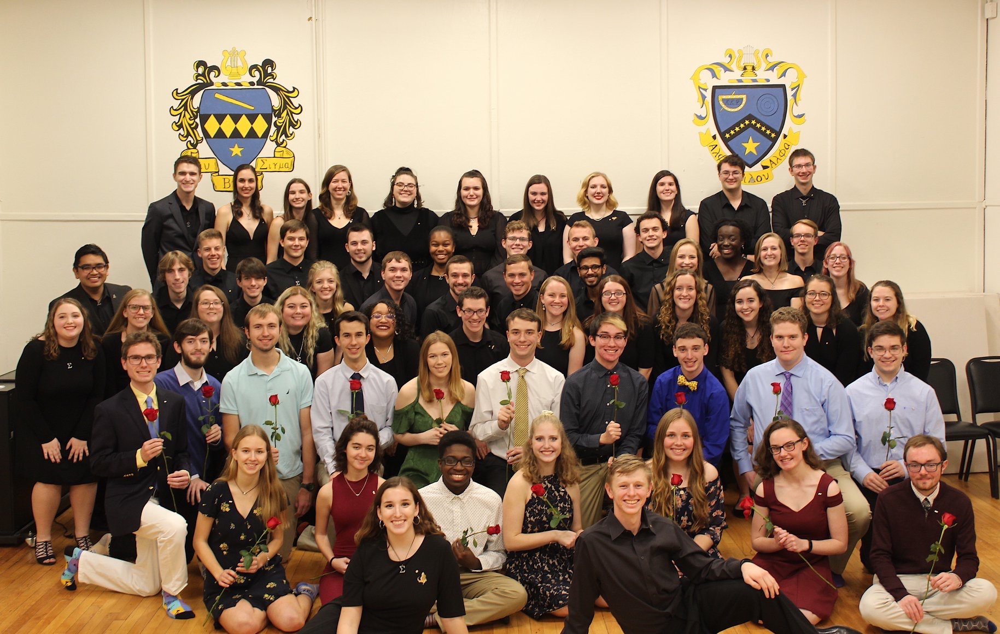

Throughout my education at Georgia Tech, I have had the opportunity to engage in enriching and fulfilling activities. In BeeSnap I have been able to grow as a programmer, designer, and leader. Music at Georgia Tech has given me a space to grow as a musician and create long-lasting memories with friends.
I am involved in Georgia Tech's Vertically Integrated Project program on the team BeeSnap. BeeSnap's focus is on collecting big data of bees and other pollinators in urban environments such as Atlanta to understand pollination patterns and monitor bee health. I am a member of the subteam BeeKeeperGO, where we are building a mobile bee farming and image collection app using the game engine Unity.
 BeeKeeperGO is a mobile application that gamifies data collection of pollinators in urban environments. The user takes images of bees and flowers and upload them, where they are processed by image recognition algorithms to classify the image's subjects. The user is then given in-game currency based on the value of the image.
Users can use that currency to build their garden, which is the game section of the app. Users can buy different species of flowers and bees with the in-game currency and populate the garden. Over time, the in-game bees will pollinate the garden's flowers, which will earn the user more currency. As the user buys new bee and flower species, they will unlock different pages in a factbook, which contains detailed information about the bee and flower species present in the game.
My contributions to BeeKeeperGO are largely quality of life improvements, adding elements that increase user enjoyment or optimizing segments to create a more robust app.
During my first semester with BeeSnap, I researched and fully implemented music and sound effects into the app. Prior to this, the game contained no music and only a simple click sound effect when a button was pressed, and only on some buttons. Feeling that a calm folky soundtrack would liven up the garden scene and increase user engagement, I explored free music options, researched looping music in Unity, and implemented what I set out to do.
My second semester saw me as the team lead for BeeKeeperGO, which meant onboarding new members with GitHub and Unity, facilitating discussion in meetings, and encouraging members to tackle what they want to do with the app. In addition, we also had a deadline to release the app by the end of the semester. As a result, the semester was largely focused on creating a minimum viable product to be released. Unfortunately due to COVID-19, our work was halted mid-semester and we weren't able to release BeeKeeperGo, but we were able to fix several bugs, implement new features, and polish gameplay.
 One of my most active hobbies was music as I was a member of several music ensembles at Tech. I played trumpet in the Georgia Tech Marching Band and Pep Band, and bass guitar in one of the school's jazz ensembles. Additionally, I am a sister of the Epsilon Theta chapter of Tau Beta Sigma, a co-ed band service sorority.
I marched with the Georgia Tech Yellow Jacket Marching Band for three years, performing at several sporting events, school occasions, and community events. Being part of the band gave me the opportunity to connect with people who shared a common interest.
In the fall of 2019 I joined the marching band's leadership and became one of four Libraries Lieutenants. Our duties included creating copies of music and drill for members, handling the purchase and distribution of music folders and lyres, and replacing music or drill when needed. Additionally, the libraries team sought to digitally convert our paper music library into a google drive, making it easier to find and categorize music. This was a year-long process, and included help from other members of the band, including the sisters of Tau Beta Sigma and brothers of Kappa Kappa Psi.
 Tau Beta Sigma is a co-ed band service sorority which strives to serve the Georgia Tech band and the Atlanta music community. The organization hosts several major service projects every year such as teaching Girl Scouts about music, cleaning out and organizing rooms in the Couch music building, preparing and serving lunch for the GTMB during band camp, and traveling to Atlanta schools to teach children how to play instruments.
